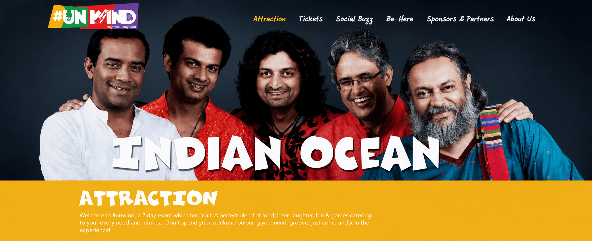
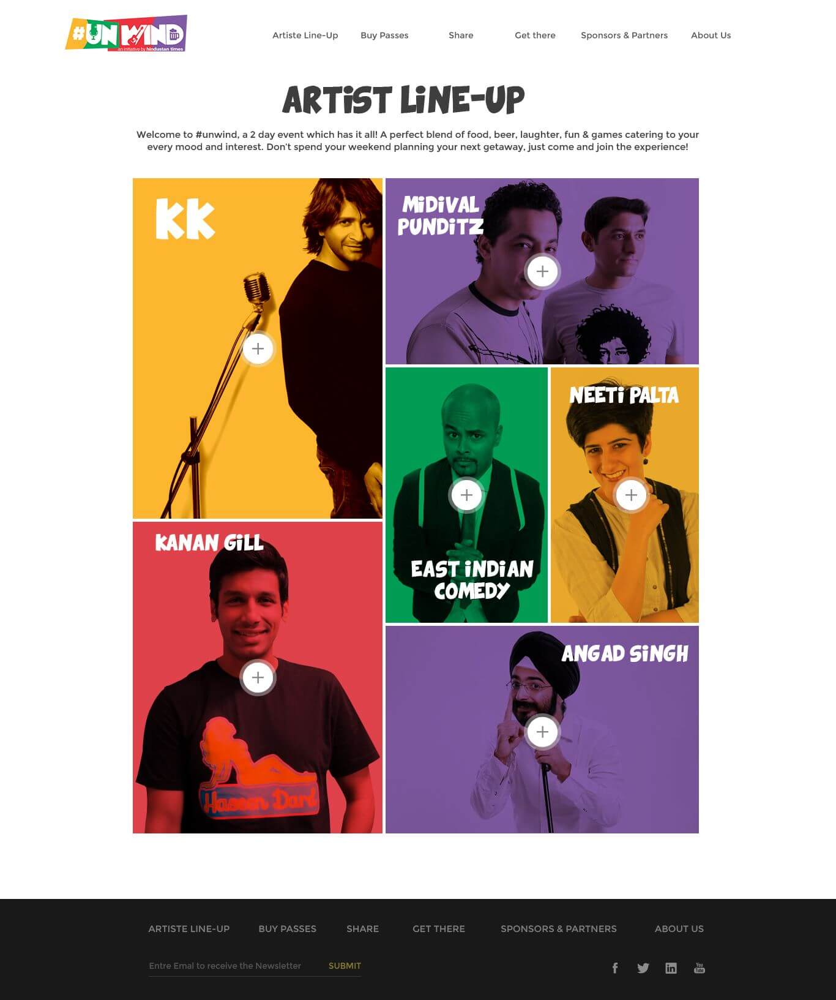
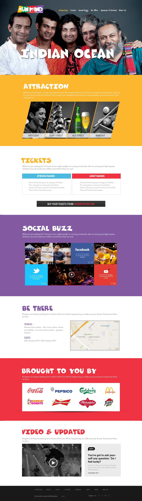

Artists, comedians, food, beer, games, passes and venue information all competed for attention.
← Back to workTwo days.
Hindustan Times · Integrated Event Campaign
Two days.
Every reason to unwind.

Project overview
A packed festival.
One easy invitation.
Unwind brought music, comedy, food, beer, games and social energy together in one two-day experience.
Our role was to build anticipation before the gates opened—turning a broad event line-up into a clear digital journey from discovery to ticket purchase.
- Platform
- Event Awareness
- Content
- Social Creatives
- Experience
- Campaign Microsite
- Channels
- Facebook · X · YouTube
The challenge
Create the buzz.
Clarify the experience.
Every social interaction needed to move audiences toward useful event information and ticket action.
The strategy
Sell the mood.
Then remove the friction.
Lead with the energy audiences would experience, then organise every practical detail around a direct route to attendance.
- 01
Attract
Use artists, comedy and festival colour to stop the social scroll.
- 02
Inform
Make line-up, attractions, venue and pass information easy to scan.
- 03
Convert
Connect campaign content to a focused microsite and ticket journey.
The attraction
A line-up built
for every mood.
Music and comedy became the campaign’s strongest discovery assets, with each performer contributing a distinct route into the same event world.

The campaign system
From social buzz
to being there.
Artist reveals
Talent-led content created anticipation and repeat reasons to return.
Attraction stories
Food, drinks, games and hangout spaces widened the event promise.
Useful information
Passes, venue, dates and partner details were organised for quick decisions.
Social amplification
Facebook, X and YouTube carried one recognisable campaign language.

Key deliverables
One campaign language.
Every audience touchpoint.
Campaign creatives
Promotional artwork for artists, attractions, announcements and reminders.
Social communication
Content designed to generate awareness, conversation and event intent.
Event microsite
A complete digital destination for line-up, tickets, venue and updates.
Information design
A visual hierarchy that made a content-heavy festival easy to understand.
The outcome
A festival discovered
before it was experienced.
Unwind’s broad offering became one coherent campaign ecosystem—energetic enough to create desire and organised enough to turn attention into attendance.
Distinct event world
Bold colour and talent-led imagery made the campaign easy to recognise.
Clear discovery
Audiences could understand the complete experience without information overload.
Connected journey
Social promotion and the campaign microsite worked as one conversion path.
More than an event.A weekend state of mind.
More work
View all workHaldiram’s.
Pack Kiya Kya?
Have an experience worth filling?